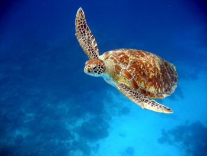

Elephant Rock
This is probably the most "famous" dive site in the Similans. The name comes from a formation of three rocks that break the surface, with the largest of the rocks resembling an elephant head. While exploring Elephant Rocks many swimthroughs, you may encounter giant trevally, reef sharks, giant octopi, turtles, lionfish & mantis shrimps.

Back